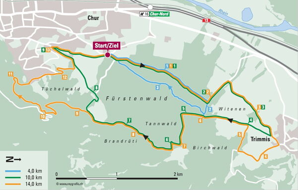

Agenda
Trainings / Wettkämpfe / Anlässe
Lauftreff Chur
Der Lauftreff findet jeden Mittwoch um 19.00 Uhr bis 20.00 Uhr statt. Zur Sommerzeit beim Waldhausstall, zur Winterzeit bei der Bushaltestelle Obere AU Hallenbad
Dauerlauf in 3 Gruppen nach Stärkeklasse. Anmeldungen sind nicht nötig, auch für Einsteiger/innen.
Lauftreffleiter: Brigitte, Marco, Iris, Lädi, Orlando, Peter
Helsanatrail: Der Helsanatrail startet beim Waldhausstall ist ganzjährig offe und beschildert. Es gibt 3 Strecken mit unterschidlichen Längen und Anforderungen.
| Strecke Blau: 4,1 Km | Strecke Grün: 10,2 Km | Strecke Gelb:13 Km |

Agenda 2026
wird laufend erweitert
Agenda 2025
Agenda 2024
Agenda 2023
Agenda 2022
wird laufend erweitert
Agenda 2021
wird laufend erweitert